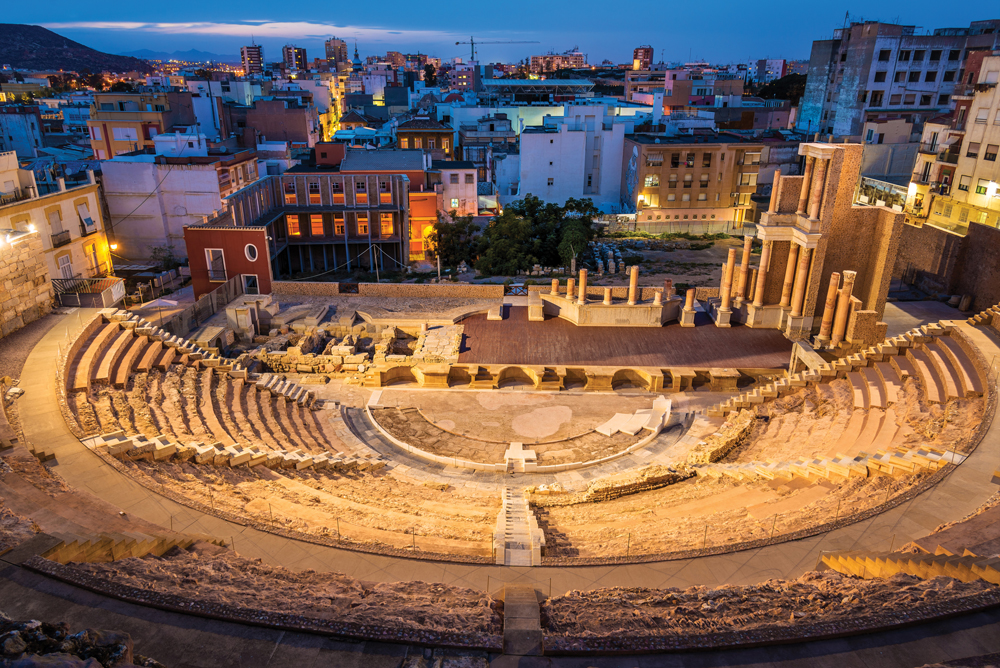
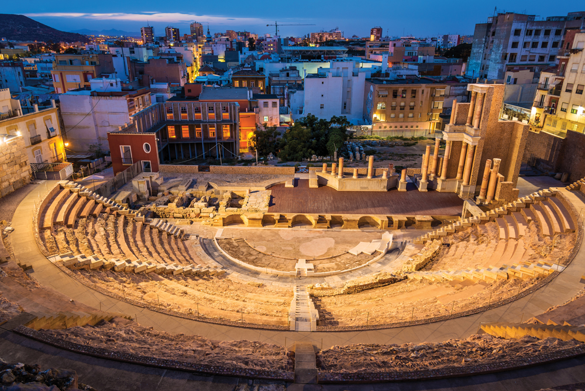

flight
 Pour voir notre selection
Pour voir notre selectionPour voir les conseils de nos spécialistes
Pour voir notre selectionL'Espagne bénéficie d'une culture riche et variée, c'est l'un des éléments les plus importants dont elle dispose. Elle est très riche en traditions et coutumes. De plus, le passé reste encore très présent aujourd'hui. Les taureaux et le flamenco sont ce qu'il y a de plus caractéristique dans ce pays. L'un des plus grands attraits de l'Espagne est sa cuisine exquise, considérée comme l'une des meilleures au monde en raison de sa qualité et de sa grande variété. Et il n'est pas surprenant que goûter certains de ses plats soit quelque chose que vous adorerez. Voyager à travers l'Espagne, c'est comme visiter un musée en plein air. L'Espagne regorge d'églises, de palais, de remparts, de ponts, entre autres beaux monuments qui méritent d'être vus, admirés et photographiés. Sans aucun doute, ils t'impressionneront et te feront tomber amoureux. C'est quelque chose que tu ne peux pas manquer.
En Espagne, tu trouveras des sites à visiter dans les villes, sur la côte et dans les zones rurales, offrant des paysages différents d'est en ouest et du nord au sud. En Espagne, tu découvriras également d'incroyables monuments de différentes époques qui vaudront la peine d'être admirés. Dans tous ces endroits, tu trouveras des gens espagnols accueillants et amicaux, qui n'hésiteront pas à te montrer la beauté de ce pays.
La grande diversité géographique, culturelle et climatique du territoire laisse également des empreintes dans la cuisine. Chaque région a ses spécialités : étant bordée par la mer, l'Espagne propose de nombreux plats à base de poissons et de fruits de mer, tandis que dans les montagnes sont confectionnés des mets plus ruraux. C'est de là que provient son célèbre jamón, ainsi que son chorizo. Dans le sud de l'Espagne, comme en Andalousie, des spécialités froides telles que le gaspacho ont vu le jour. Tout cela contribue à expliquer la richesse de cette cuisine. Sans oublier les tapas vendues comme "pinchos" ou raciones, historiquement servies au début avec une boisson pour susciter la soif et boire davantage, elles constituent aujourd'hui une partie intégrante de la gastronomie espagnole avec une grande variété.

.jpg)
.jpg)
Les meilleures périodes pour visiter l'Espagne s'étendent de mars à mai et de septembre à octobre. Entre mars et mai, les températures passent progressivement de 12 °C à 17 °C, alors qu'en septembre et au début du mois d'octobre, elles oscillent entre 17 °C et 21 °C. Et pour les amateurs de chaleur et de plage, en été, vous pourrez profiter de températures dépassant les 35 degrés
 
